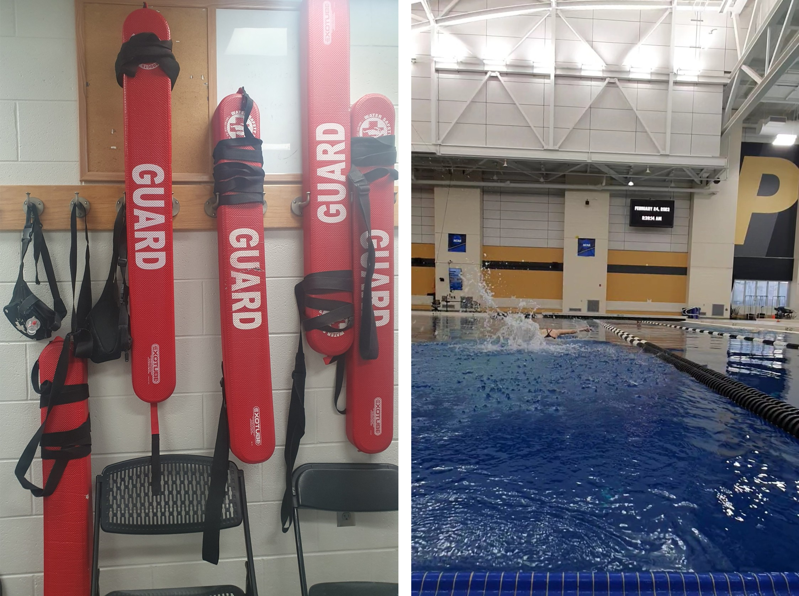
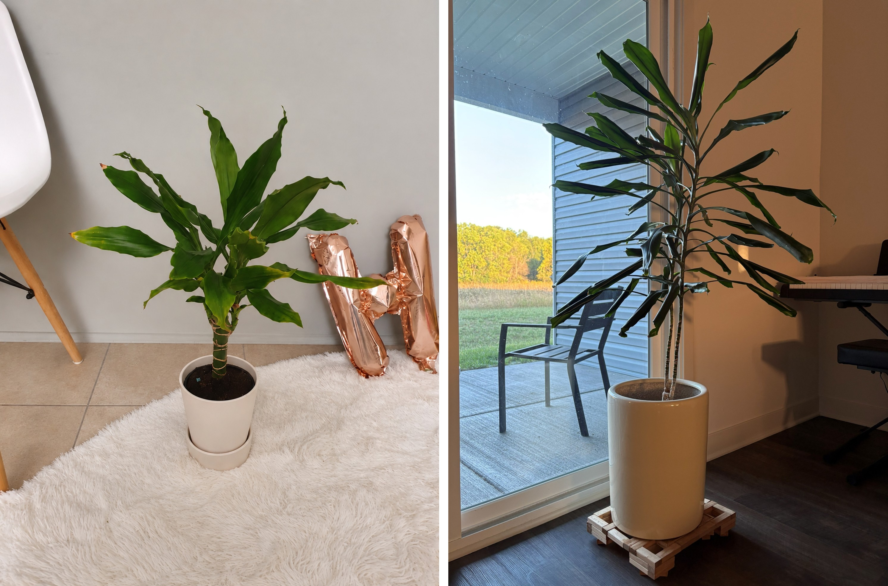
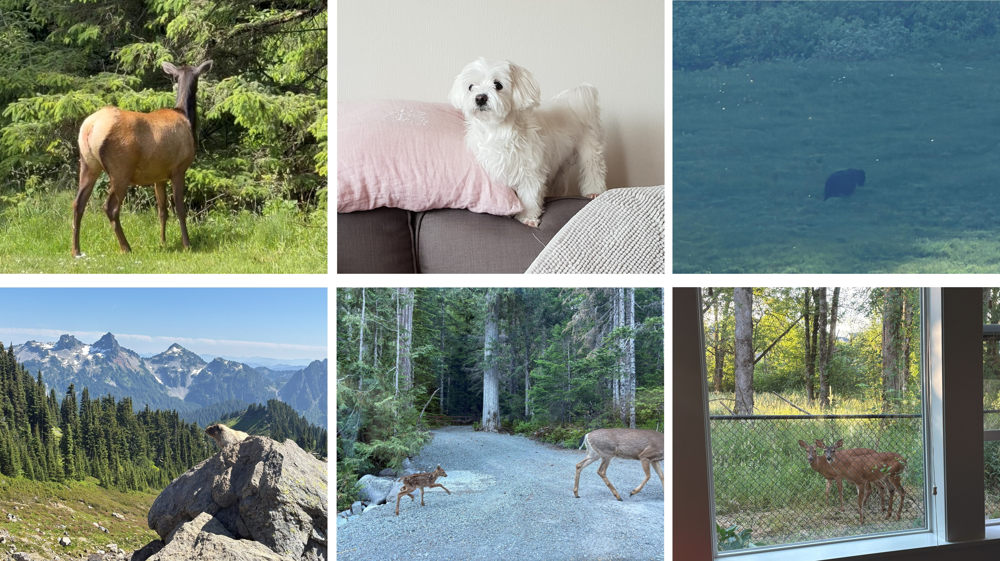

Fun Facts
Swimmer, Lifeguard & Sports Lover

I love swimming, and I am a Red Cross certified lifeguard. I believe swimmers are very strong, patient, and consistent!
I fell in love with swimming during my Ph.D., when I learned how important it is to be consistent and patient. I also love that swimming gives me a completely different space outside of research.
I am happy that I can thrive in the water and save someone if needed!
Before becoming a swimmer, I was more of a badminton player! I played on my university badminton team, and one of my funniest memories is winning a competition with my friend and being interviewed by my university newspaper afterward. (Quite a long time ago!)
I am always up for a badminton challenge!
Plant & Animal Lover


Watching plants grow is one of my pleasures. I adopted some plants during my first year of the Ph.D., and now they are very tall.
(I wish I had also grown this much in research!)
I enjoy watching them grow from small sprouts or seeds into plants and propagating them to share with my friends.
I also love animals—especially my dog—and I think the feeling is mutual! Whenever I go out, I somehow meet different kinds of animals quite easily.